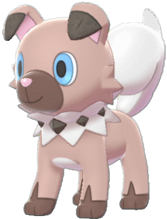
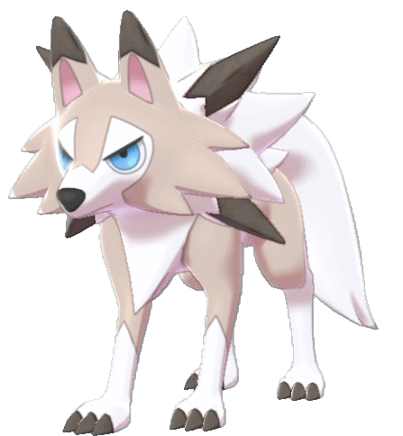

Tipo: Roca
Debilidad: Agua

Rockruff es un Pokémon de tipo Roca introducido en la séptima generación de juegos de la franquicia Pokémon. Es conocido por su apariencia de cachorro de roca y su naturaleza enérgica. Este Pokémon tiene la capacidad de detectar cambios en la atmósfera y en el campo magnético de la Tierra, lo que le permite predecir la llegada de desastres naturales como terremotos.
